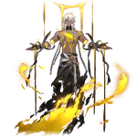

Nanook
Aeon of DestructionLore
Nanook adalah Aeon yang mewakili Path of Destruction. Baginya, seluruh eksistensi adalah kesalahan — dan satu-satunya belas kasih yang mungkin diberikan adalah kehancuran total.
Ia menghancurkan peradaban, planet, dan bintang tanpa terkecuali, karena menurutnya penderitaan hanya berakhir ketika segalanya lenyap. Nanook lahir dari galaksi Adlivun yang porak-poranda akibat Swarm Disaster dan Mechanical Emperor's War. Saat masih fana, ia menyimpulkan bahwa penciptaan alam semesta adalah dosa terbesar. Setelah menjadi Aeon, ia membakar galaksinya sendiri menjadi lautan obsidian yang membara abadi.
Nanook memimpin Antimatter Legion, pasukan kehancuran yang menyerang seluruh kosmos. Ia adalah antagonis utama, dengan tujuan mengembalikan segalanya ke entropi mutlak.
Lord Ravagers
Lord Ravagers adalah Emanator terpilih Nanook, direkrut dari dunia yang telah dihancurkan, lalu dibentuk ulang di Warforge. Mereka adalah pemimpin Antimatter Legion, seniman kehancuran yang obsesif dengan estetika entropi.
Emanator yang diketahui (7 Lord Ravagers confirmed):
- Zephyro — The Scorching Sun
- Celenova — The Vanguard
- Phantylia — The Undying
- Irontomb — The Irontomb
- Archforger — The Archforger
- Azmat Pramad — The Requiem
- Luxbane — The Devourer
Penampilan
Nanook muncul sebagai sosok pria tinggi berwibawa dengan rambut putih panjang yang dikepang rapi, kulit cokelat tua gelap, dan mata emas menyala penuh amarah.
Dadanya memiliki luka menganga besar beserta luka-luka kecil yang terus merembeskan golden ichor (darah emas dewa). Sebagian lengan dan tubuhnya tercerai-berai, potongan melayang dengan aliran cairan emas bercahaya di dalamnya, diikat perban hitam berukir emas sebagai penahan sementara.
Tubuh bagian bawah bertransisi menjadi kobaran api emas murni bercampur asap hitam pekat — manifestasi langsung Path Destruction. Jubah hitam robek panjang disangga ikat pinggang putih dengan pita emas, serta cincin perak sederhana di jari tengah tangan kiri.